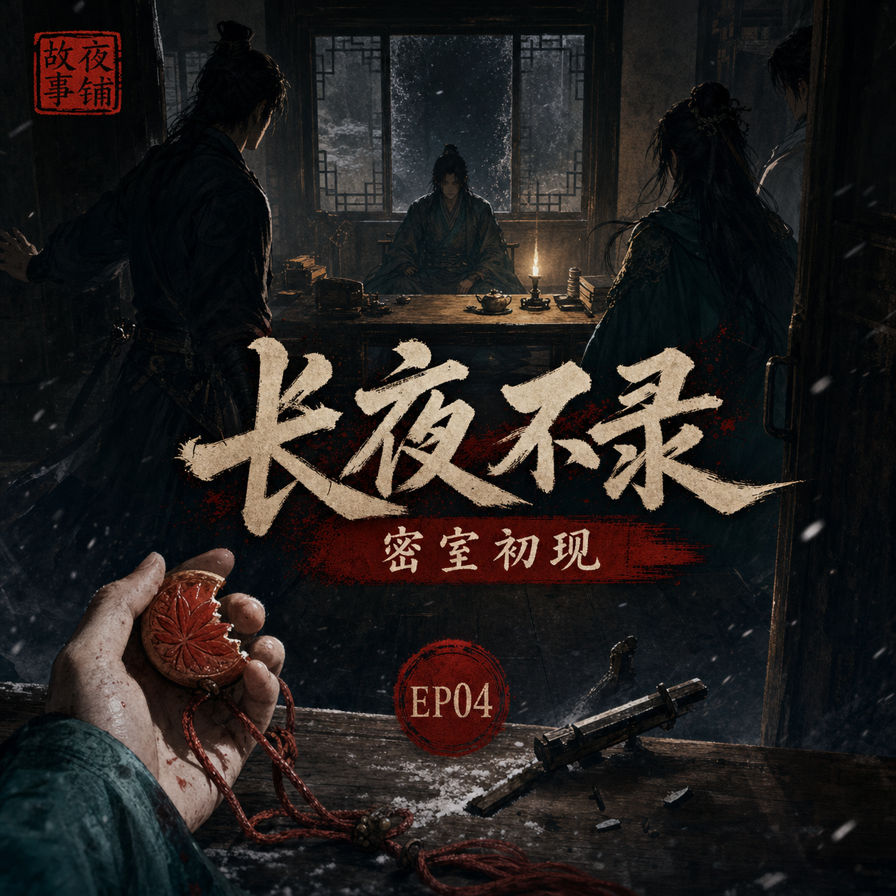

长夜不录：密室初现
柳照寒说若天亮还活着便会说出玉佩来历，可天亮之前，他死在了反锁的房中

简介
赵三声称有人从房梁上掠过，马厩惊动，众人夜起。混乱过后，柳照寒房门反锁，屋内无声。沈砚破门而入，发现洗剑楼少主端坐桌前，身上无一处明显伤口，掌心却握着半枚红叶玉佩。密室成形，命案开始。
标签
- 古风
- 刑侦
- 武侠
- 密室
- 验尸
- 命案
柳照寒说若天亮还活着便会说出玉佩来历，可天亮之前，他死在了反锁的房中

赵三声称有人从房梁上掠过，马厩惊动，众人夜起。混乱过后，柳照寒房门反锁，屋内无声。沈砚破门而入，发现洗剑楼少主端坐桌前，身上无一处明显伤口，掌心却握着半枚红叶玉佩。密室成形，命案开始。